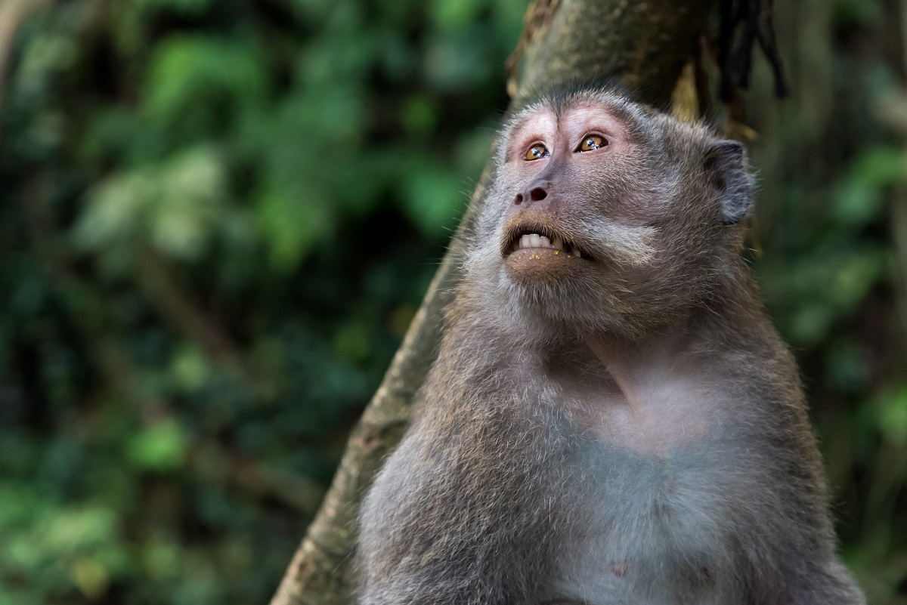

Os macacos são, em grande parte, animais arborícolas, ou seja, passam a maior parte do tempo em árvores, salvo exceção de algumas espécies que preferem a vivência no solo como, por exemplo, Gorilas e Mandris.
A alimentação destes animais se baseia praticamente em frutas, folhas e sementes. Alguns vão além e consomem pequenos anfíbios e pássaros de menor porte.
O mais antigo de todos os primatas, o orangotango, é o vovô da turma. Estudos apontam que os ancestrais deste animal tenham surgido há, aproximadamente, 12 milhões de anos.
Primatas originários do continente americano enxergam, apenas, em preto e branco. Já os nascidos na África conseguem diferenciar as cores.
Lembra do desenho animado Madagascar? Os lêmures, grandes coadjuvantes do filme, são primatas exclusivos desta ilha.
Você sabia que um macaco participou da Primeira Guerra Mundial? O babuíno Jackie foi para guerra junto com seu dono, servindo na África do Sul. Jackie, assim como outros soldados, até batia continência e recebeu uma medalha de honra pela bravura durante a guerra.
Agora conheçam o macaco mais inteligente dos continentes: o macaco-prego. Eles são capazes de reconhecer seu reflexo no espelho e utilizar ferramentas ao seu favor. Caso você queira um macaquinho de estimação, esta é a espécie ideal, desde que adquiridos de criadores autorizados pelo Ibama.
Os macacos são tão próximos dos humanos que até possuem seu próprio conjunto de impressões digitais!
Não se meta com os micos-leões. Eles são animais extremamente territorialistas e podem defender sua área com unhas e dentes.
Além de macaco soldado, também temos macaco astronauta. Para testar os efeitos do lançamento espacial sobre o corpo humano, alguns macacos foram lançados ao espaço como cobaias.
Interessante, não? Nossos “primos” são extremamente fascinantes e ainda há muito o que descobrir sobre eles.